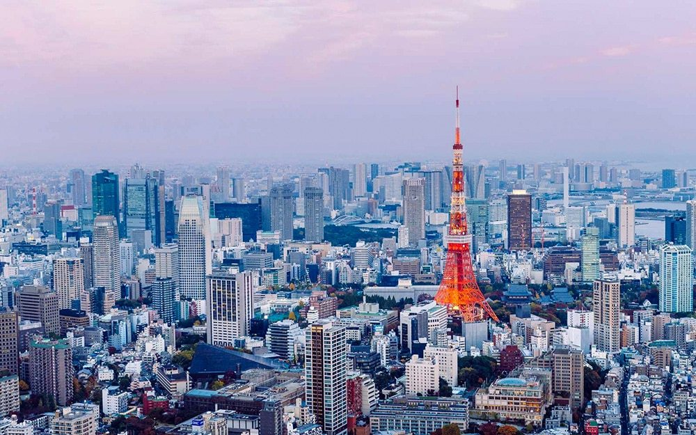

Paris

Explore the city of lights, with its rich history, stunning architecture, and vibrant culture. Paris is the capital and largest city of France. With an official estimated population of 2,102,650 residents in January 2023. Paris is the fourth-largest city in the European Union and the 30th most densely populated city in the world in 2022. Since the 17th century, Paris has been one of the world's major centres of finance, diplomacy, commerce, culture, fashion, and gastronomy. For its leading role in the arts and sciences, as well as its early and extensive system of street lighting, in the 19th century, it became known as the City of Light. The City of Paris is the centre of the Île-de-France region, or Paris Region, with an official estimated population of 12,271,794 inhabitants in January 2023, or about 19% of the population of France.The Paris Region had a GDP of €765 billion in 2021, the highest in the European Union.According to the Economist Intelligence Unit Worldwide Cost of Living Survey, in 2022, Paris was the city with the ninth-highest cost of living in the world.
New York

New York City, often referred to as NYC, is one of the most iconic and dynamic cities in the world. It iscomprised of five boroughs: Manhattan, Brooklyn, Queens, the Bronx, and Staten Island, each with its own unique character and attractions.New York City is a place of endless exploration, creativity, and inspiration, making it a must-visit destination for travelers from around the world.
Switzerland

Switzerland is known as a neutral state. You will often, in situations of conflict, hear people say, “I’m Switzerland.” This epithet has been earned given its neutral position in regional conflicts and beyond. In line with History, while their army is one of the most advanced ones in the world, Switzerland hasn’t been to war since 1505. Its neutrality has also given them the advantages they enjoy today, inside and outside Europe. The Federal Council states that they are in the Schengen zone and have implemented a few EU laws to accommodate trade, but are not members of the EU.
Tokyo
Tokyo, Japan’s busy capital, mixes the ultramodern and the traditional, from neon-lit skyscrapers to historic temples. The opulent Meiji Shinto Shrine is known for its towering gate and surrounding woods. The Imperial Palace sits amid large public gardens. The city's many museums offer exhibits ranging from classical art (in the Tokyo National Museum) to a reconstructed kabuki theater (in the Edo-Tokyo Museum). Tokyo is Japan's major cultural centre. Displays depicting the art and history of Japan and Asia are featured at the Tokyo National Museum in Ueno Park. Ueno Park is also the site of a science museum, a zoological garden, and two major art museums.
Italy

Italy is well-known for its architecture, culture, art, opera, literature, film, and fashion. This is one of the best countries to go on a foreign tour. The country is known for its mesmerizing topography, pristine beaches, historical artifacts, monuments, and more. Furthermore, Italian food and wine are also world-famous. Every year various festivals also take place in Italy. Other than tourist destinations, Italy is highly famous for some other exceptional things including cuisine, wine, fashion, and so on...
Turkey

Turkey is a fascinating destination that straddles the crossroads of Europe and Asia. Its rich history, vibrant culture, scenic beauty, and hospitable people make it a popular tourist attraction worldwide. Here's an in-depth look at why Turkey continues to draw millions of tourists each year.Turkey has been the cradle of multiple civilizations, making it a treasure trove for history and archaeology enthusiasts. It has some of the most important archaeological sites in the world, including the ancient cities of Ephesus, Troy, and Pergamon. Not to mention the Hagia Sophia, which stands as a testament to Byzantine architecture.